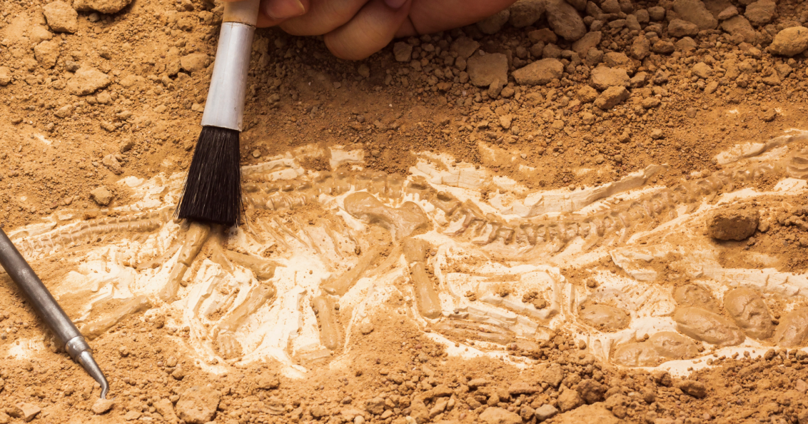

Journal of Agricultural Research
EXPLANATION IN ARCHAEOLOGY
(by Stanish Charles, EXPLANATION IN ARCHAEOLOGY, OVERVIEW. In: Encyclopedia of Archaeology, ed. by Deborah M. Pearsall. © 2008, Academic Press, New York)
Glossary: critical theory A philosophical position in the humanities and social sciences that seeks human liberation and social transformation through knowledge and action. empiricism A theory of knowledge emphasizing the role of experience in the formation of ideas, while discounting the notion of innate ideas. epistemology The study or a theory of the nature and grounds of knowledge. hermeneutics An epistemological theory with roots in the study of biblical texts that understanding is based on the dialectical (back-and-forth) relationship between the whole and its parts. New Archaeology A movement that began in America in the 1960s, aimed at making archaeology more scientific by employing empiricist and neo-positivist principles. positivism A philosophy that the only authentic knowledge is scientific knowledge, and that such knowledge can only come from positive affirmation of theories through strict scientific method. postprocessualism A school of archaeological thought that uses critical theory and interpretative methods while cautioning against the shortcomings of scientific archaeology. processualism A school of archaeological thought that uses empiricist theories of knowledge and scientific methods to derive testable models of human behavior.
its 200 years as a recognizable intellectual activity, archaeology has focused on both the recovery of ancient objects and explaining what precisely those objects mean about the societies that produced them. In this sense, ‘explanation’ in archaeology is historically and culturally contingent, and the aims and techniques of archaeological explanation shift as the epistemological and ontological foundations of the discipline shift. The purpose of this entry is to define precisely what explanation in archaeology is in contemporary terms. Explanation is defined by most dictionaries as ‘the act of giving the reason for, the justification of, or the cause of phenomena.’ Historically and linguistically, the terms explanation and cause are associated with scientific approaches in the social, behavioral, and natural sciences. Within contemporary archaeology, however, there are both scientific and nonscientific approaches to studying the past. A proper examination of ‘explanation’ in archaeology therefore requires a broadening of the definition of explanation to include any epistemology that gives meaning to the past as derived from the material record. This entry will therefore be an expansive treatment of the topic to cover both nonscientific and scientific approaches.
we can profitably define four broad kinds of archaeological research based upon their philosophical foundations and the implicit and explicit goals stated by their practitioners. These kinds of archaeology, ranging from the least to the most scientific: are (1) critical theory,(2) hermeneutic or interpretative archaeology, (3) historicist archaeology, and (4) scientific archaeology. In short, contemporary critical theorists seek to create narratives of the past consistent with broad moral and political principles and to examine the discipline of archaeology itself as a constructed social practice. Hermeneutic or interpretative archaeology seeks to read multiple meanings into the archaeological record. Historicist archaeology seeks to explain the archaeological record of objects and archaeological contexts in space and time. Scientific archaeology seeks to subsume the empirical archaeological record into broader principles of human behavior. Each of these kinds of archaeology begins with different logical principles and assumptions. For each kind of archaeology, ‘explanation’ has different meanings, if any meaning at all. Even more complex, many archaeologists adopt the principles of two or more of these intellectual traditions simultaneously as they do their work.
Critical archaeology Critical theory practitioners stand at the end of one continuum in the philosophy of social science. Generally antagonistic to modern philosophies of science (logical positivism and empiricism), the core goal of critical theory is not to define what is in the archaeological record, but rather define: (1) what the archaeological record ought to teach us about the past and (2) to deconstruct archaeology as a power-infused social activity and rectify what they see as past errors in the way archaeology has been practiced. Critical theorists begin with the assumption that all knowledge is socially constructed, a tradition drawn largely from philosophical idealism. Furthermore, in this tradition, no socially constructed knowledge base is better or worse than any other by any a priori criteria. As such, critical theorists in archaeology seek explanation of the past in terms of their implications for social action in the present. Explanation, or more appropriately stated, providing meaning to the archaeological record and to the act of explanation itself, is subsumed under broad social, political, cultural precepts, and/or moral mandates.
the forth, is considered inappropriate for archaeological interpretation. Any scientific epistemology assumes that a real and knowable world exists apart from the human observers – that is, what scientists study is independent of the analytical process and has an independent ontological status with its own a priori properties. Scientific epistemologies assume that data and history are real, and that the process of interpretation, in theory (if not necessarily in practice), can be morally neutral. Scientific philosophies eschew the metaphysical. Extreme logical positivism even denied the existence of abstract truths not verifiable by the human senses, although most archaeological scientists today hold much more moderate views as described below. Archaeologists working in this critical theory tradition would ideally expect the interpretation of those power relationships to contribute to some kind of broader social activity that weakens asymmetrical relationships of power in contemporary society. Ironically, while maintaining a hyper-relativistic stance as an ideal, interpretations of the past that conform to morally sound principles of social justice are usually considered superior to those that are perceived.
Page 1
Historicist archaeology Historicist archaeology seeks to precisely define objects and events in the archaeological record in space and time. The term ‘historicist’ is used to differentiate this school from ‘historical’ archaeology. The latter is a subdiscipline of archaeology focusing on time periods that have contemporary textual information (see Historical Archaeology: As a Discipline). Historical archaeology can be conducted in any one of the four traditions described here (see Historical Archaeology: Methods). The former, described in this article, refers to a particular approach in archaeology that has its own epistemological principles.For instance, the discovery in 1974 of the tomb of the Chinese Emperor Qin Shihuangdi represents a classic instance of explanation in this tradition. The tomb had been described in texts, the dates were known to the precise year, and the archaeological data confirmed and expanded the empirical knowledge of this important culture.
Analysis
Once artifacts and structures have been excavated, or collected from surface surveys, it is necessary to properly study them. This process is known as post-excavation analysis, and is usually the most time-consuming part of an archaeological investigation. It is not uncommon for final excavation reports for major sites to take years to be published.At a basic level of analysis, artifacts found are cleaned, catalogued and compared to published collections. This comparison process often involves classifying them typologically and identifying other sites with similar artifact assemblages. However, a much more comprehensive range of analytical techniques are available through archaeological science, meaning that artifacts can be dated and their compositions examined. Bones, plants, and pollen collected from a site can all be analyzed using the methods of zooarchaeology, paleoethnobotany, palynology and stable isotopes[67] while any texts can usually be deciphered. These techniques frequently provide information that would not otherwise be known, and therefore they contribute greatly to the understanding of a site.
virtual archaeology
Computer graphics are now used to build virtual 3D models of sites, such as the throne room of an Assyrian palace or ancient Rome.[68] Photogrammetry is also used as an analytical tool, and digital topographical models have been combined with astronomical calculations to verify whether or not certain structures (such as pillars) were aligned with astronomical events such as the sun's position at a solstice.[68] Agent-based modeling and simulation can be used to better understand past social dynamics and outcomes. Data mining can be applied to large bodies of archaeological 'grey literature'. For instance, the discovery in 1974 of the tomb of the Chinese Emperor Qin Shihuangdi represents a classic instance of explanation in this tradition. The tomb had been described in texts, the dates were known to the precise year, and the archaeological data confirmed and expanded the empirical knowledge of this important culture.
Scientific archaeology accepts many of the principles of historicist archaeology but goes further in that the primary goal is to subsume the archaeological record into broader patterns of human behavior in space and time. Scientific archaeology is viewed by its practitioners as a branch of comparative behavioral and social science. As such, it is most closely associated with ‘explanation’ and ‘causality’, as generally understood in the philosophy of science. Contemporary scientific archaeology is an outgrowth of the New Archaeology popular in the 1960s and 1970s. The philosophical standards of this perspective can be found in the book Explanation in Archaeology by P. Watson, S. Le Blanc, and C. Redman (1971). The New Archaeology explicitly borrowed from the logical positivism and extreme empiricism of the Vienna School and its later practitioners. When the critique of logical positivism among philosophers of science in the 1950s and 1960s gained ground later in archaeology, the New Archaeology modified its epistemological underpinnings. In particular, modifications by the work of the philosopher Hempel (in particular, the recognition of ‘statistical’ laws) and, to a lesser extent, the influence of Popper, contributed to a reformulation that served as the philosophical basis of the next generation of scientific archaeology that developed out of the New Archaeology
 Eliminating some of the excesses of the extreme
empiricism of logical positivism and adopting more
‘elastic’ criteria of verification, scientific archaeology
has shifted its focus since the 1980s. It is a safe generalization to say that the New Archaeology was largely
associated with Hempelian deductive-nomological
explanation, while contemporary scientific archaeology is more associated with Popperian falsification
epistemologies and instrumentalist philosophies of
science. Instrumentalist assumptions reject the notion
that absolute truth can be known and instead rely on
‘best fit’ models.the same way that evolutionary biologists construct
generalizing principles to understand the origin and
evolution of the world’s plants and animals. Within
evolutionary biology, there is a wide range of theoretical approaches.Virtually all contemporary scientific neoevolutionary theory rejects the universalizing and totalizing
features of early unilineal or, to a lesser extent theory.
Eliminating some of the excesses of the extreme
empiricism of logical positivism and adopting more
‘elastic’ criteria of verification, scientific archaeology
has shifted its focus since the 1980s. It is a safe generalization to say that the New Archaeology was largely
associated with Hempelian deductive-nomological
explanation, while contemporary scientific archaeology is more associated with Popperian falsification
epistemologies and instrumentalist philosophies of
science. Instrumentalist assumptions reject the notion
that absolute truth can be known and instead rely on
‘best fit’ models.the same way that evolutionary biologists construct
generalizing principles to understand the origin and
evolution of the world’s plants and animals. Within
evolutionary biology, there is a wide range of theoretical approaches.Virtually all contemporary scientific neoevolutionary theory rejects the universalizing and totalizing
features of early unilineal or, to a lesser extent theory.
Page 2
Archaeologists around the world use drones to speed up survey work and protect sites from squatters, builders and miners. In Peru, small drones helped researchers produce three-dimensional models of Peruvian sites instead of the usual flat maps – and in days and weeks instead of months and years. Drones costing as little as £650 have proven useful. In 2013, drones have flown over at least six Peruvian archaeological sites, including the colonial Andean town Machu Llacta 4,000 metres (13,000 ft) above sea level. The drones continue to have altitude problems in the Andes, leading to plans to make a drone blimp, employing open source software. Jeffrey Quilter, an archaeologist with Harvard University said, "You can go up three metres and photograph a room, 300 metres and photograph a site, or you can go up 3,000 metres and photograph the entire valley." In September 2014 drones weighing about 5 kg (11 lb) were used for 3D mapping of the above-ground ruins of the Greek city of Aphrodisias. The data are being analysed by the Austrian Archaeological Institute in Vienna.
Historical archaeology
Historical archaeology is the study of cultures with some form of writing and deals with objects and issues from the past. In medieval Europe, archaeologists have explored the illicit burial of unbaptized children in medieval texts and cemeteries.In downtown New York City, archaeologists have exhumed the 18th century remains of the African Burial Ground. When remnants of the WWII Siegfried Line were being destroyed, emergency archaeological digs took place whenever any part of the line was removed, to further scientific knowledge and reveal details of the line's construction.
Scientific archaeology views explanation as a logical reductive process. Historicist archaeology, in turn, focuses on what was once known as space–time systematics; this is the locating and explanation of objects in an ordered sequence around the world in different places and times. There are a number of logical means by which archaeologists seek to explain the past. Perhaps the most common is the ethnographic analogy. Ethnographic analogy is based upon the principle that people in similar cultural and environmental circumstances faced with similar goals, resources, and constraints will behave in similar ways.
Ethnographic analogy works with other kinds of human behavior to varying degrees. It is successful to the degree that selective pressures operate on the choices made by people. Where cultural choices, such as language syntax or dress styles, do not alter the fitness of individuals or groups in a selective environment (both social and ecological), then ethnographic analogy is of little or no use.Ethnoarchaeology and experimental archaeology are logically similar to ethnographic analogy (see Ethnoarchaeology; Experimental Archaeology). Ethnoarchaeology studies modern peoples to provide more precise ethnographic analogs to aid in the explanation of past behaviors.
Conclusion
Archaeology is a rich and diverse discipline with theoretical approaches that range from the most humanistic to the most scientific. Archaeology can be practiced as an interpretative narrative, as a historical discipline, or as a comparative social or behavioral science.
 Archaeology stimulates interest in ancient objects, and people in search of artifacts or treasure cause damage to archaeological sites. The commercial and academic demand for artifacts unfortunately contributes directly to the illicit antiquities trade. Smuggling of antiquities abroad to private collectors has caused great cultural and economic damage in many countries whose governments lack the resources and or the will to deter it. Looters damage and destroy archaeological sites, denying future generations information about their ethnic and cultural heritage. Indigenous peoples especially lose access to and control over their 'cultural resources', ultimately denying them the opportunity to know their past. Some historical archaeology sites are subjected to looting by metal detector hobbyists who search for artifacts using increasingly advanced technology.All forms of archaeological practice that are executed well can enrich our understanding of the past. Explanation in archaeology takes many forms and depends upon the kind of archaeology that is practiced. The most explicit use of explanation in archaeology is found in the historicist and scientific traditions. As such, contemporary archaeology has moved well beyond a focus on the object to permit us to define meaning and explain past behaviors around the world in space and time.